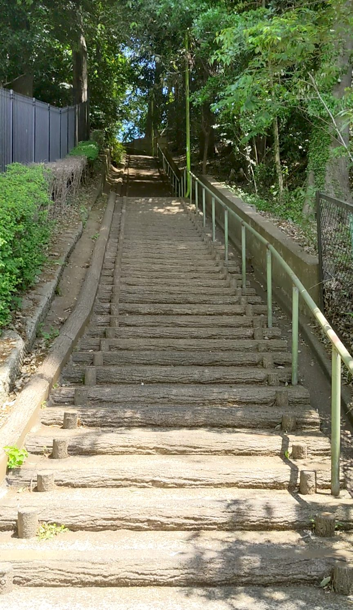
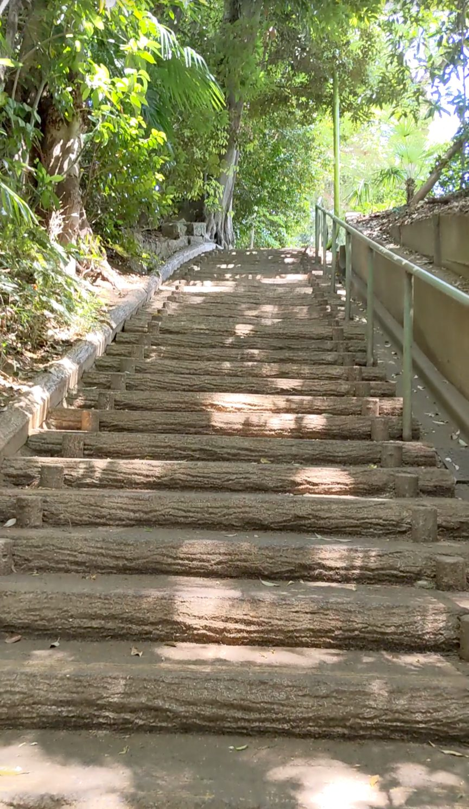
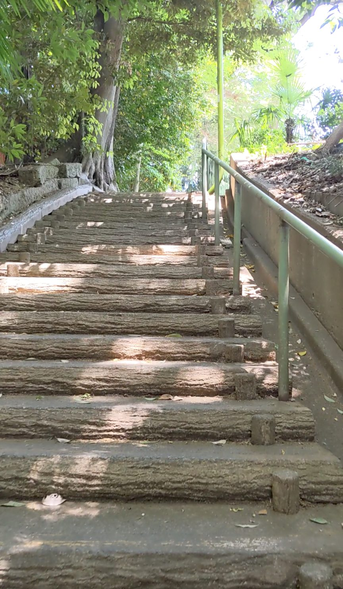
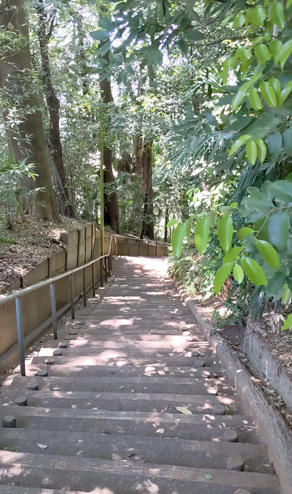

東京都世田谷区岡本にある「玉川病院そばの階段」は、住宅街に静かに溶け込む130段の石段です。二子玉川駅から歩いてアクセスできますが、大通りから少し入り組んだ場所にあるため、地図を見ながら来ることをおすすめします。木漏れ日と葉を揺らす風の音が心地よい、知る人ぞ知る癒しの階段です。
東急田園都市線「二子玉川駅」下車、徒歩約15〜20分。大通りから少し入り組んだ場所にあるので、地図アプリで「東京都世田谷区岡本2-24付近」を目指して向かうのがおすすめです。
段差は比較的低めで登りやすい設計ですが、住宅街の中にあるため静かに通行しましょう。雨上がりは石段が滑りやすくなるので、グリップのある靴で訪れてください。
大通りから細い路地を進んでいくと、住宅街の中にひっそりと石段が現れます。観光地のような派手さはまったくなく、静かな住宅街の日常に溶け込む、落ち着いた雰囲気の入口です。

登り始めると、まず気づくのが木々の緑の豊かさです。両側に木が茂っていて、晴れた昼間でも柔らかな木漏れ日が石段に落ちてきます。5月の清々しい陽気も相まって、登っているだけで気持ちが穏やかになる感覚がありました。

風が吹くたびに葉っぱがざわざわと揺れる音が聞こえてきます。街の中にいるとは思えないほど静かで、その音だけがよく響く。130段という数字はそこそこありますが、段差が高くないので息が上がることもなく、むしろ「もう少し歩いていたい」と感じるくらいの心地よいペースで登れました。

派手な絶景ではないけれど、生活感のある街並みと緑が混ざり合う景色は、それはそれでほっとする眺めです。登り切った後もしばらくその場に立ち止まってしまいました。

派手なスポットではないからこそ、地元の人が散歩で使っているような雰囲気があって、それがまた良かったです。「大通りから少し入り組んでいる」という立地も、ちょっとした宝探しみたいで楽しい。地図を片手に、ぜひ探しに来てみてください。